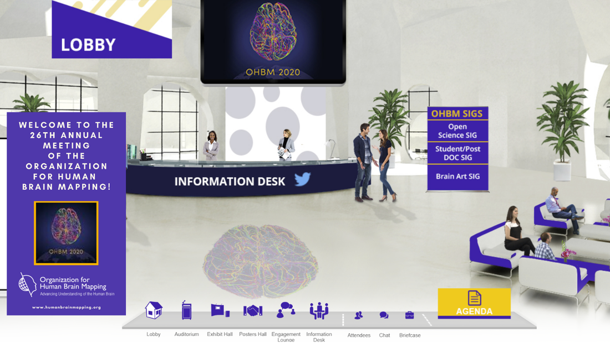
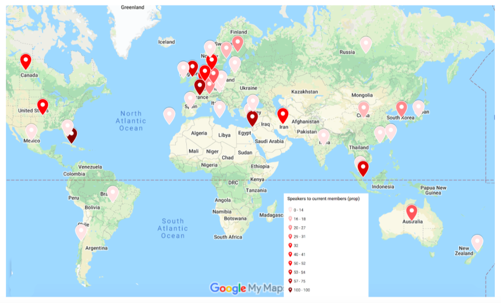
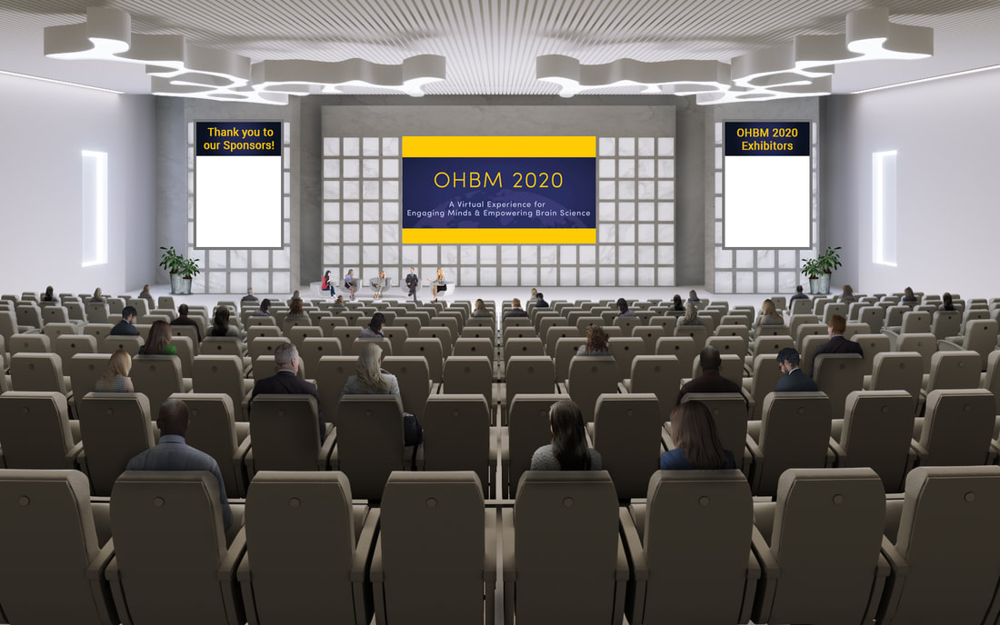
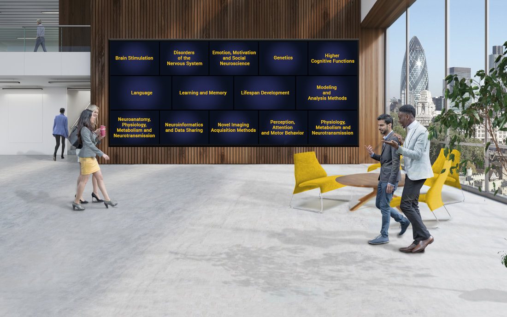
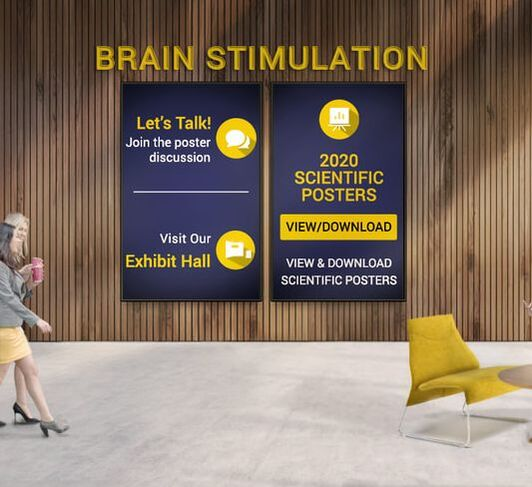

|
By the OHBM Communication Committee By now you've heard that the OHBM Annual Meeting will be virtual! The 26th Annual Meeting of the Organization for Human Brain Mapping is happening from June 23 - July 3, Saturday and Sunday excluded, and will take place entirely online. This is new for many of us so we’ve put together a short Q&A. Here we address a number of questions you may have, and provide a taste of what you can expect from this unique OHBM Annual Meeting experience. What can I expect from a virtual OHBM? To start, this is not just going to be a massive Skype or Zoom meeting. After searching through many options for virtual meeting applications, OHBM council decided on a ‘real-feel’ conference provider that has previous experience with Neuroscience conferences and other very large meeting events. This conference may not feature wafts of espresso from the Rome cafes, or access to the delicious hawker markets of Singapore, but it will have almost everything else that you expect from a conference location: a lobby with signposts to navigate your way around, auditoriums for talks, a poster hall, an exhibit hall, engagement lounges for networking, the art exhibits, the open science room and even a help desk.  Draft image of the virtual OHBM Annual Meeting lobby What about the different time zones, will I need to get up at 3am to not miss my favourite speaker? OHBM is an international Society (as can be seen in the distribution of our members in the map below) and in looking at the Annual Meeting schedule and time zones, there are relatively few overlapping “humane” work hours in each day for all continents. To account for this, all sessions will be available 24/7 once presented and the schedule for this year’s Annual meeting has been carefully crafted by Program Committee to allow fair access to the live Q&A portions for all participants. The content has been spread out across two weeks, and the start time for sessions will vary. For three days, sessions will alternate between three major time zones as follows: 1) New York (North/South America) 2) London (Europe) and 3) Hong Kong (Asia/Australia). In addition live sessions will happen for only a few hours a day - so no need to spend long stretches glued to your computer screen! See the most up-to-date meeting schedule here.  The distribution of OHBM members in June 2020 A look on the bright side of meeting virtually: No jet lag! With the OHBM Annual Meeting going virtual, there are no long plane rides, no cramped seating and no battles for middle arm rests. Instead of having three espresso shots and struggling to stay awake during a keynote lecture, you can attend after a good night’s sleep or even outside while getting some vitamin D and fresh air. See everything! No choosing between talks in parallel sessions and running from the slightly overrun talk 1 in session A to talk 2 in session B. You can swap between auditoriums with just a mouse click and you will always have a front seat for each presentation! No need to find pet sitters! Nor somebody to water your plants! And if you have older kids at home, there will be links to activities to get them engaged in neuroscience, such as printable brain hats and colouring sheets: give them insight into what it is you actually do. A much reduced carbon footprint! As a community, we will produce less air/rail/car travel emissions from travel and also less onsite paper, plastic and food waste. And no need to argue with the airline staff about whether you can take your poster or not! Home-made food, no queueing for the toilet and predictable Wifi connection at all times! Still, internet connections are sometimes unstable, so what happens if the keynote speaker drops out during his or her talk? Mindful of this, almost all sessions will be pre-recorded, but during the allocated time slots for the “live program”, the sessions will be chaired and the speakers will be available for Q&A. Pre-recording with professional audio visual support means that there will be a minimum of glitches. Plus, this means that almost everything in the meeting will be available for viewing on the Communiqué platform for four months after the meeting (using your registration) and, in time, via the OnDemand system (for OHBM members). For a list of keynote lectures, symposia and oral sessions see the meeting website.  Draft image of OHBM Auditorium What I always loved most about OHBM are the poster sessions and interacting with people at their posters. How do I do this online? One of the joys of attending OHBM meetings is pouring a coffee (or beverage of your choice) and ambling through the poster hall. So it’s a relief that there will still be poster sessions, albeit in a virtual poster hall. There are stand-by times as usual. For this you’ll have live chat functions, so you can respond to questions in real time (or leave questions outside the stand-by times for the presenter to respond to later). Even better, you can ‘stand’ in front of the same poster for as much time as you want without fear of blocking somebody else’s view. Contact options at each poster allow you to ask questions to the presenter and a virtual poster reception lets you interact with presenters and other poster hall attendees.  The ‘entrance’ to the OHBM poster hall  Join the poster discussion and view posters in the category 'rooms' Some things you may want to think about when preparing your poster The only restriction is that your poster has to be in PDF format, so be creative! But keep in mind that your audience may view it on their tablet or laptop, so make the layout easy to read. You might want to include links for more information, larger figures or your preprint paper on the work. Why not record yourself presenting the poster and add a link to the video in your poster? There are some great recording options (e.g. using Zoom); you could even ask somebody to be a pretend audience and ask tricky questions about your work! Since this year you cannot attract people to your poster using funny dances or by handing out chocolates, advertise your poster or poster video on Twitter using #OHBM2020Posters! A main aspect of OHBM is socialising. Are there options to do that? Yes, it’s always Happy Hour somewhere! There will be Happy Hours/Coffee Hours taking place at various times in the schedule to accommodate many different time zones. We are currently working on solutions to make these Happy Hours as interactive as possible by having chat and video options available. I usually don’t get enough sleep during OHBM due to the packed program and all the social networking. I don’t think I can handle being online so much! We all know that being hunched over a desk for long periods is bad for our eyes, our backs and for our concentration. As stated above, the annual meeting has been split from four full days into eight half days, spread over two weeks. In addition, the meeting will now run only on weekdays to minimise any disruption with other activities, and all material will be available throughout the duration of the meeting (and beyond, as described above). What about the educational courses? The educational courses are always a particular draw, and extremely useful for both early career researchers and seasoned PIs alike. This year we have some great offerings on deep learning in neuroimaging, advanced functional and structural imaging of the cerebellum, EEG data acquisition and pre-processing, and many others (full list here). These educational sessions will now run after the annual meeting beginning July 13, when you can begin watching the pre-recorded lectures. Later that week there’ll be interaction times when you can ask questions of the educational speakers. You can also prepare for some of these educational courses by reading through our ‘OnDemand’ tutorial series of blogposts, on resting-state fMRI, diffusion MRI, machine learning and anatomy in neuroimaging. Will there be virtual brain art this year? Definitely! Do not miss NeuroDiversity, the exclusively online 2020 OHBM Brain-Art Exhibit & Competition brought to you by the OHBM Brain-Art SIG. NeuroDiversity is being developed along three axes. Axis 1 aims to give underrepresented groups in neuroscience a voice. Axis 2 will showcase art pieces by neurodiverse populations - for whom art can be a means of communication, an instrument for therapy, or a source of solace and pleasure. Axis 3 is designed to highlight the geographic, ethnic and cultural richness within the OHBM community - the Brain-Art SIG will put together a ‘brain collage’ from postcards provided by OHBM members. Check out our artworks and videos, chat with artists, and engage in our art-guided meditation session. If you would like to showcase your art at the conference, then our annual Brain-Art competition is now open for submissions! We are accepting pieces for the following categories: 2D art (i.e., digital images such as drawings, photos, paintings); 3D art (i.e., sculptures & installations); Failed attempt/bug/artifact; and Special category on Neurodiversity & Hope. For the Special category we encourage all OHBM members to download one of the provided brain postcard outlines and fill it with a pattern/image that they like and feel represented by. Submit your art before Friday, June 20, 2020, 11:59 PM CDT. You’ll be able to see this Brain-Art and use our online family-friend brain-art activities throughout the annual meeting. You can also engage with a train track session on brain visualization at the OHBM Hackathon. In addition, we’ll be announcing our competition winners at the virtual Student/Postdoc SIG and Neuro Bureau Networking Social. So yes, definitely lots of virtual brain art this year. What about a virtual Open Science Room? The Open Science Special Interest Group (OS-SIG)’s Open Science Room (OSR) will be hosted using the same interactive virtual platform as the OHBM meeting, and also broadcasted live to a zero-cost registration platform for accessible global access. The OSR will provide opportunities for networking and informal discussion alongside the formal hosting of nearly 40 talks, including keynotes, lightning talks and software demonstrations. OHBM members will also have 24h access to ‘Open Research Advisors’ in the main exhibition hall, who will be on hand to answer all your open research practice questions and signpost where necessary. The Open Science room content will be repeated 3 times over 24 hours, at times suitable for individual members of our global community. For the first time, we are also actively engaging with the community to help us build the OSR, so we can deliver a professional and accessible program which works for everyone. Interested volunteers can still sign up to contribute here. As one of our community volunteers has said, “The OSR is the place to witness the practice of open science in action”, and we can’t wait for you to be a part of it. A call for OSR talks is also open; please consider contributing! We are also open for talk submissions (schedule space permitting) until 1st June. Please do submit your talk abstract via our website as soon as you can! The OHBM Brainhack - the collaborative hackathon organized by the OS-SIG - will be held online from June 16th-18th. For the first time, the OHBM Brainhack will be run as a global online event organized around 3 hubs ('Africa, Middle East and Europe', 'Americas' and 'Asia and Pacific') that will foster collaborations across countries while making it possible for participants worldwide to attend during working hours. Registration is now open for an unprecedented capacity of 500 attendees. This year we are putting special care into building a welcoming environment for those who have never attended a hackathon before. We will provide educational TrainTrack sessions tailored for beginners and opportunities to directly apply new skills by joining a hackathon project. What other events organised by the SIGs and committees can I expect? For the family-friendly activities planned by the Diversity & Inclusivity Committee see our recent blog post. The Diversity & Inclusivity Committee is also organizing the second Diversity Roundtable on the topic of Neuroscience and the LGBTQ community. The four speakers of this year's roundtable will elaborate on challenges faced by LGBTQ scientists, and will familiarize the audience with research (and lack thereof) on LGBTQ individuals, with a focus on how increasing awareness around issues faced by this community can impact academic careers. The Student Postdoc SIG are planning an annual symposium themed Success in Academia: A road paved with failures. There are 3 sub-themes: 1- Sharing/normalizing experiences of failure; 2- How to be a good mentor; 3- How to handle your own failures. A series of workshops are also being planned (e.g., career transition, coping with COVID-19 and trauma, life and work balance, working with industry from academia), stay tuned! OHBM’s new open access publishing platform – Aperture – is set to launch in June! Aperture will host an informational booth during the OHBM 2020 Annual Meeting where you can learn more about the platform, the submission and review processes, and meet the Journal Manager and members of the Aperture Oversight Committee (AOC). You are invited to participate in an Aperture round table discussion that will also be offered during the Annual Meeting to get your question answered and learn more about the platform. In the meantime, if you have questions, please contact Kay Vanda, Aperture Journal Manager at aperture@humanbrainmapping.org or visit the Aperture website. Will all of this influence future meetings? Going completely online will clearly take a little of the magic away from this year’s Annual Meeting. But the silver lining to that cloud is that this 2.0 version of the event addresses a number of recent concerns brought up by OHBM members: It makes attendance much easier for those less able to leave their home countries (for instance due to visa issues, dependents or mobility restrictions). It doesn’t require sometimes expensive travel and accommodation budgets, and reduces our carbon footprints. It also allows the use of innovative interactive elements that may not have been easy to implement at the physical conference. If you haven’t registered yet, you can do that now here. The current situation has forced many scientific organisations to ramp up remote attendance options. In doing so, it has fostered innovative solutions that can improve online user experiences. In future years, these options will be tried and tested, making them easy to apply to supplement our physical meetings. Final thoughts Overall, this year’s Annual Meeting is certainly going to be different. It will however remain consistent in that it will provide a thorough update on the latest findings, current trends and promising avenues of brain mapping research. It will provide learning opportunities for those wanting to train up in new skills. It will also provide opportunities for networking and socialising that may be sorely missing during early summer. The staff and Committees at OHBM have worked to ensure each part of the Annual Meeting is thought of and included in the virtual version. And for those not yet convinced about whether a virtual meeting will offer the same communal or educational experience, there will be ways to increase the realism of the event in your workspace. Brew some coffee before the poster session; you don’t even need to drink it, just get the smell wafting through the house. Set your Zoom or Skype background to the streets of Montreal. Plan to “attend” with some of your friends or colleagues at the same time or the same talks/posters. You can even make your own event shirt using the OHBM 2020 logo, or design your own version! Or just show up and chat to new and old friends. We look forward to welcoming everyone to the OHBM 2020 Virtual Annual Meeting and hope to “see” you there.
0 Comments
Your comment will be posted after it is approved.
Leave a Reply. |
BLOG HOME
Archives
August 2023
|
 RSS Feed
RSS Feed